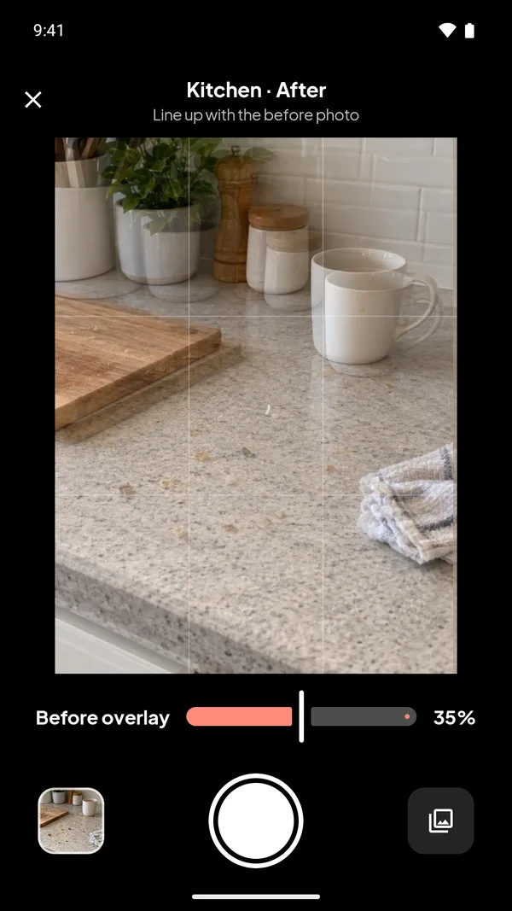
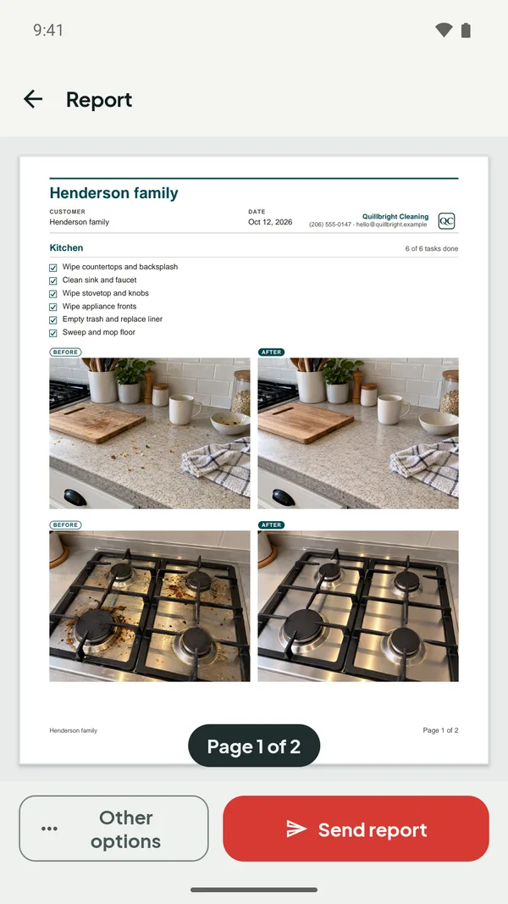
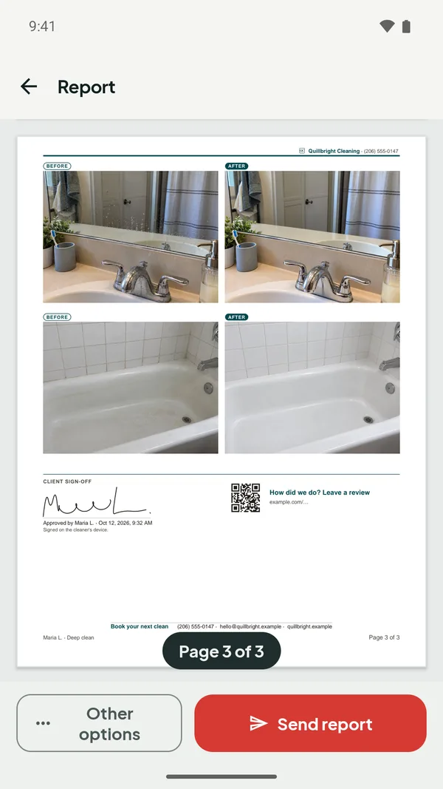
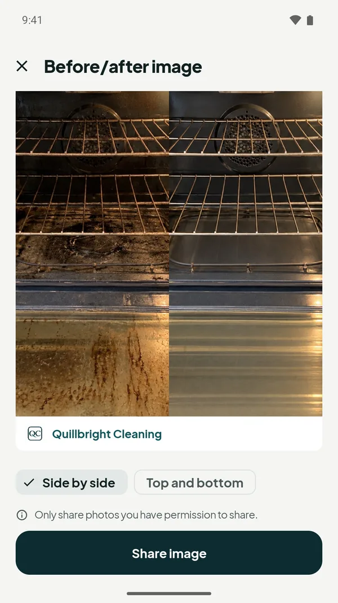

Cleaning reports with before & after photos, as one PDF
Take the photos in the app, tick off the tasks in each room, see what’s missing, and send a multi-page PDF report before you leave the job. Made for house cleaners and small cleaning businesses.
Join the free Android betaTwo steps: join the tester group with your Google account, then tap Become a tester and install from Google Play. Please don’t buy Pro during the beta (it’s a real charge). Testers are asked to open the app a few times over 14 days. Feedback: turkogluarda0@gmail.com.
- Android
- Works offline
- No account
- No ads
- English, Português, Español, Deutsch, Français
Three steps after every cleaning job
-
Take the before photos
Start a job with a ready-made checklist (Standard, Deep or Move-out), then use the in-app camera or pick photos from your gallery.
-
Clean room by room
Tick off each task as you go: kitchen, bathroom, office, or whatever you name the room.
-
Take the after photos and send
A see-through copy of the before photo helps you match the same angle. Then check what’s missing, add a message for your client and send the PDF.

In the free version
Everything you need to show a client what was done, and nothing you have to sign up for.
Your business name on every report
Set it once; it sits at the top of each PDF.
Room-by-room jobs
Before and after photo pairs, captions and a task checklist for each room.
Ready-made checklists
Standard, Deep and Move-out checklists you can edit for each job.
Recent clients
A new job for a client you’ve served before takes a few taps.
A real multi-page PDF
Preview every page before you send. Long jobs continue on extra pages without cutting photos in half.
Send your way
Send with any app on your phone, send again in one tap with the app you used last time, save the PDF to a folder, or print it.
Backup and restore
All jobs and original photos in one zip file, for the same or a new phone.
Sample job
Open a finished example report before you start your own.
Light and dark theme
Follows your phone’s setting.
Tidyslip Pro: your business on every report
A one-time purchase. No subscription.
Your brand
- Your logo and contact details on every report, with a “Book your next clean” line on the last page.
- Your review link and a QR code at the end of each report.
- No “Created with Tidyslip” note.
Your clients
- Client sign-off: your client signs on your phone and the signature is added to the last page.
- Before/after images with your logo, ready to share.
Your time
- Duplicate a job for repeat clients, with its rooms and tasks.
- Save your own checklists and use them again.
- More checklists: Vacation rental, Office and Post-construction.
- Unlimited reports.



Business and client names in these screens are fictional; photos are illustrative.
Works offline. Your jobs stay on your phone.
Tidyslip works without an internet connection and without signing up. Your jobs, client details, signatures and photos stay on your phone unless you send a report or a backup yourself. Photos taken in Tidyslip are not added to your gallery and carry no location. There are no ads.
Tidyslip sends usage and crash data to improve the app, never your jobs, clients or photos, and you can turn this off in Settings. Buying or restoring Pro needs an internet connection. Read the privacy policy
3 free reports, then a one-time upgrade
- Your first 3 report exports are free. Sharing the same unchanged report again doesn’t use another one.
- The sample job’s report never uses your free exports.
- Tidyslip Pro is a one-time purchase: unlimited reports plus your brand on every report, client sign-off and more. No subscription. The price for your country is shown in Google Play and in the app before you buy.
- Opening, editing and backing up your jobs always stays free. Bought Pro before? Use “Restore purchases” with the same Google Play account.
Questions about the cleaning report app
Can I make a cleaning report PDF without an account?
Yes. There is no sign-up. Pro is tied to your Google Play account, and you can restore it with “Restore purchases”.
Does it work without internet?
Yes, for creating jobs, previewing and exporting reports. Buying or restoring Pro needs a connection.
Can I use before and after photos I already took?
Yes. Take photos with the in-app camera or add them from your phone’s gallery; each pair sits side by side.
Is there an iPhone version?
Not at the moment. Tidyslip is available for Android. Your clients can open the PDF reports on any phone or computer.
Are the dates and photos in the report verified?
No. A Tidyslip report is a simple record you create and share. Dates, photos and sign-offs come from you and your phone. They are not independently verified or certified.
Is the client sign-off legally binding?
No. It shows your client saw the report. It isn’t a legal contract and isn’t verified.
Do my clients need the app?
No. They get a PDF that opens on any phone or computer.
Is Pro a subscription?
No. Pro is a one-time purchase tied to your Google Play account.
Can I add my review link?
Yes, with Pro. Your link and a QR code appear at the end of each report, with a neutral “How did we do?” line.
Which languages does Tidyslip support?
The app and its PDF reports are available in English, Portuguese (Brazil), Spanish (Latin America and Spain), German and French.
Does Tidyslip collect my data?
Only usage and crash data, which you can turn off in Settings, and an anonymous ID to check Pro. Your jobs, clients and photos are never sent. See the privacy policy.
How do I move my cleaning jobs to a new phone?
Use “Back up all jobs” in Settings to save a zip file, then “Restore from backup” on the new phone.